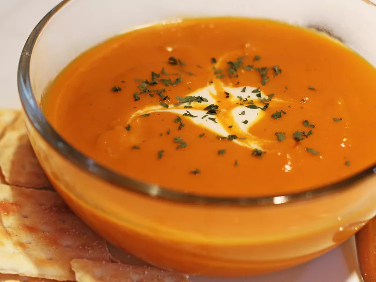

Curried Carrot Soup

Description
Carrot soup is a soup prepared with carrot as a primary ingredient.
It can be prepared as a cream- or broth-style soup.
Additional vegetables, root vegetables and various other ingredients can be used in
its preparation.It may be served hot or cold, and several recipes exist. Carrot soup
has been described as a "classic" dish in French cuisine.
Ingredients
- 2 tablespoons vegetable oil
- onion, chopped
- tablespoon curry powder
- pounds carrots, chopped
- cups vegetable broth
- cups water, or as needed
Steps
- Heat oil in a large pot over medium heat. Saute onion until tender and translucent.
Stir in the curry powder. Add the chopped carrots, and stir until the carrots are
coated. Pour in the vegetable broth, and simmer until the carrots are soft, about 20
minutes.
-
Transfer the carrots and broth to a blender, and puree until smooth.
Pour back into the pot, and thin with water to your preferred consistency.